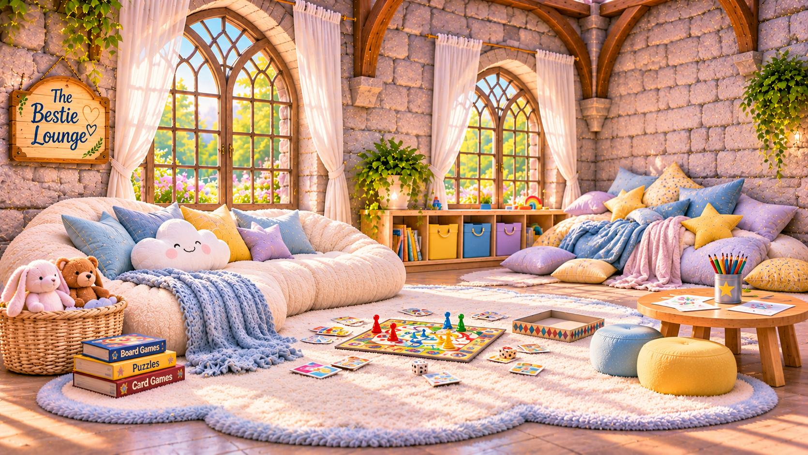

A cloud-soft sofa, a rather enthusiastic pile of pillows, toys, games, and a little art table make this a room for long afternoons with friends.
Derpy and Birthday Mouse, Honey Baby and Brittney, Liza Joy, and other welcome guests can settle in, make something, play a game, or simply enjoy being together.
No mouse shall be separated from their designated bestie. Sharing is encouraged. Cuddles are optional, but readily available.